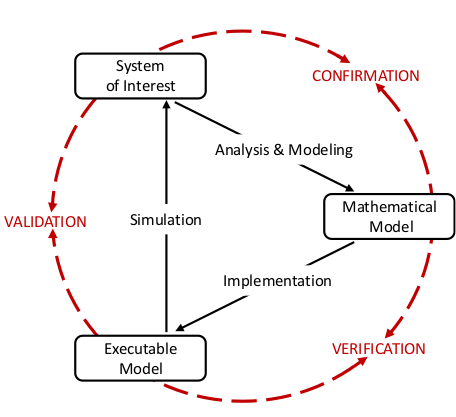

Evaluating neural network models within a formal validation framework
Robin Gutzen, Michael von Papen, Guido Trensch, Pietro Quaglio, Sonja Grün, Michael Denker
Institute of Neuroscience and Medicine (INM-6), Research Center Jülich
01.09.2019 | INCF Neuroinformatics Conference @Warsaw

What can we learn from models?
-
Models are abstract descriptions of a system of interest,
which able to generate testable predictions. - Insight from models can only be derived via inductive inference. [Hume 1748]
- Modeling doesn't seek truth, but usefulness.
How can we learn from models?
- The usefulness of a model is only determined by the accuracy of its predictions
- Validation quantifies the prediction accuracy by comparison to observations.
How can we learn from models?
Validation evaluates the consistency of the predictive simulation outcome with the system of interest, within the realm of its intended use.
Validation enables the evaluation and comparison of models, and is thus indispensable for rigorous (simulation) science
Why is this not a trivial problem?
How to implement this in a software tool?
Application: simulator comparison
Application: comparison via wave dynamics
Outlook: HBP validation framework
Thanks to all collaborators:
- Michael von Papen
- Guido Trensch
- Pietro Quaglio
- Sonja Grün
- Michael Denker
- Andrew Davison
- Shailesh Appukuttan
- Lungsi Sharma
References:
Gutzen, R. et al. (2018). Reproducible neural network simulations: statistical methods for model validation on the level of network activity data. Front. Neuroinform. 12:90. doi: 10.3389/fninf.2018.00090
Trensch, G. et al. (2018). Rigorous neural network simulations: a model substantiation methodology for increasing the correctness of simulation results in the absence of experimental validation data. Front. Neuroinform. 12:81. doi: 10.3389/fninf.2018.00081